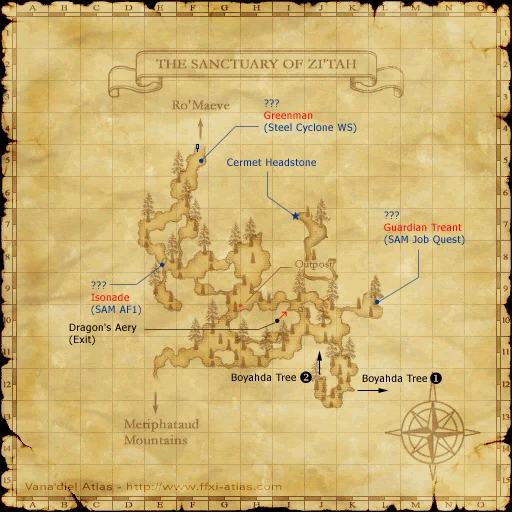

Level 75 reference · Zenith rules
|
Job: Warrior Notorious Monster |
|
|
Zone |
Level |
Drops |
Steal |
Spawns |
Notes |
|
1 |
A, H | ||||
|
HP = Detects Low HP; M = Detects Magic; Sc = Follows by Scent; T(S) = True-sight; T(H) = True-hearing JA = Detects job abilities; WS = Detects weaponskills; Z(D) = Asleep in Daytime; Z(N) = Asleep at Nighttime | |||||


Image source
Notes
- Around 6,000 HP
- Spawns for the quest The Sacred Katana.
- Low accuracy but moderately high attack.
- Killable by most melee jobs at 55~ (see testimonials).
- Susceptible to gravity and bind.
Adapted from Eden Wiki: Isonade · Contributors and history · CC BY-SA 4.0. Revision 4735. Layout, links and optional background text adapted for Zenith.